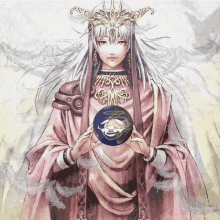
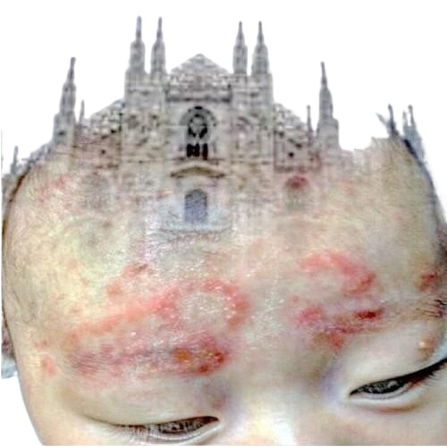

░ frequency: 40.16 mhz ░ signal: active ░

the tower transmits still, as if frozen in time.
the broadcast started in 2019,, nobody turned it off.
she left it running because she wanted someone to hear what she heard.
YABUJIN — GARDEN (AZEROY GARDEN 8888)
if the player above does not load: open on YouTube ↗

the chorus names it.
complete: garden of ___
one more thing she left behind,, perhaps her last test,, for herself that is,, not you.
am i finally getting through? even the game is telling you now read the last transmission →